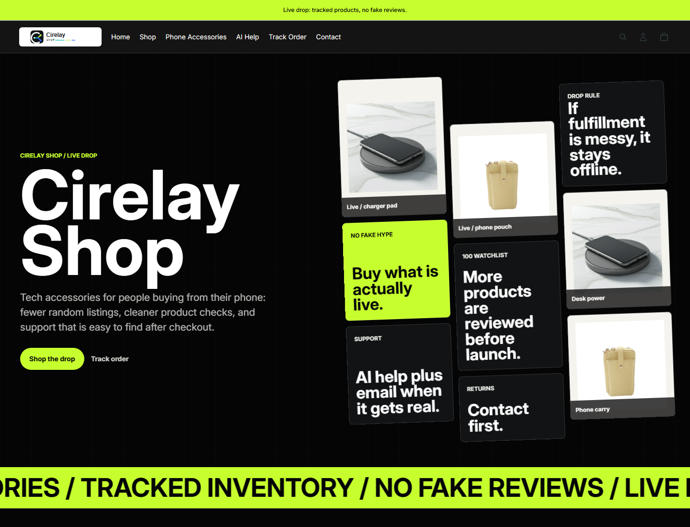

Risk log
A ranked list of account, listing, inventory, fulfillment, support, and data-handling risks.
- Severity and owner
- Evidence source
- Recommended next action
This sample uses Cirelay-owned public storefront material. It shows the format, judgment, and boundaries of a marketplace operations audit without client data or private account access.

This is not a client testimonial and does not claim sales results. It is a working sample of how Cirelay turns storefront observations into a practical action list.
Contact, order tracking, AI help, and support positioning are visible in the first screen.
Keep the public support path consistent across Shopify, Amazon listing copy, and email responses.
PassThe page states that products are reviewed before launch and avoids fake urgency or fake review language.
Convert this into a repeatable SKU gate: supplier, margin, fulfillment, return path, and support script.
PassThe storefront communicates the category, but individual product pages still need marketplace-grade specs and image standards.
Create product-specific title, bullets, dimensions, compatibility, image brief, and returns notes before channel expansion.
WatchThe page says messy fulfillment stays offline. That is good brand discipline, but it needs an internal evidence trail.
Attach supplier invoice path, shipping promise, tracking flow, defect policy, and support owner before paid traffic.
WatchThe first screen has clear actions, but a marketplace buyer also needs practical product proof close to purchase.
Add comparison specs, package contents, delivery expectation, and concise FAQ to the product page.
FixThe output is designed to be useful even if Cirelay never receives marketplace account access.
A ranked list of account, listing, inventory, fulfillment, support, and data-handling risks.
A practical cleanup path that separates urgent fixes from nice-to-have improvements.
A written least-privilege plan before any marketplace, Shopify, or analytics access is requested.
Email the marketplace, account state, SKU count, fulfillment model, and the decision the audit should support. Cirelay replies with a fixed scope before any paid work starts.